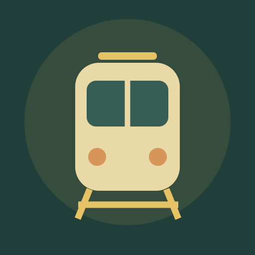

<- all projects

Monsoon Junction
PC
Volume
Live
Every train has a way through.
Rain is coming, and the valley is counting on its little hill station. Take the dispatcher's desk and guide passenger and supply trains through a miniature railway. Read the timetable, choose an arriving train, set its route to A or B and release it on a clear signal, never sending two trains into the same block. A moving train keeps its route reserved until it has passed. Watch the deadlines, bridge maintenance and the rain, because three missed trains end the shift. Play 45 timetables across five chapters, a daily timetable and an endless mode, and restore the station, including a bypass siding that changes how you route.